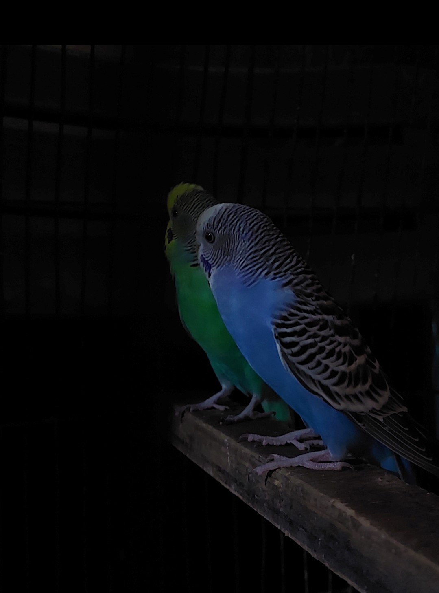

Birds, with their graceful flight and melodic songs, bring life and vitality to the skies and landscapes they inhabit. From the majestic eagle soaring high above the mountains to the tiny hummingbird flitting among colorful flowers, each species possesses its own unique charm and beauty. Birds play essential roles in ecosystems, from pollinating plants to controlling insect populations. Their ability to migrate thousands of miles showcases nature's incredible adaptability and resilience. With feathers of various hues and patterns, birds adorn the world with splashes of color, adding joy and wonder to our lives.
Birds, the feathered marvels of the sky, captivate us with their aerial acrobatics and enchanting calls. They come in all shapes and sizes, from the majestic albatross with its impressive wingspan to the tiny, delicate hummingbird hovering over nectar-filled blooms. Birds are not just creatures of flight; they are storytellers of the natural world, carrying tales of migration, courtship dances, and intricate nesting behaviors. Their presence in our lives connects us to the rhythms of nature, reminding us of the importance of freedom, resilience, and adaptability. Whether soaring high above or perched on a branch, birds inspire us with their beauty, grace, and boundless spirit.
External Link